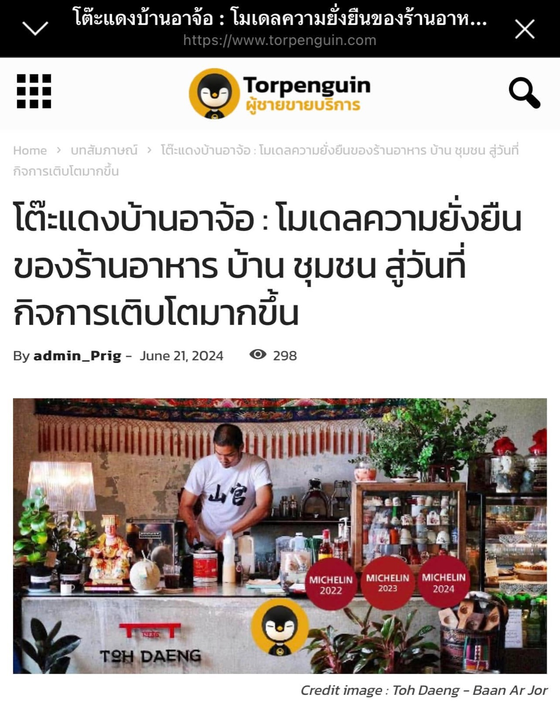

2567 · สื่อ · เหตุการณ์
ย้อนความสัมพันธ์กับทีม Torpenguin จากวิกฤตโควิดถึงงานสัมมนาที่บ้านอาจ้อ

ขอบคุณ #torpenguin นะครับ ❤️
มีโอกาสได้รู้จักพี่ต่อ และเจอตัวเป็นๆครั้งแรก ที่บ้านอาจ้อเลย สมัยนั้นเป็นความโชคดีที่เราพยายามช่วยการท่องเที่ยวภูเก็ต ตั้งแต่ covid-19 รอบที่ 1 เริ่มซา และภูเก็ตเปิดเมืองให้คนมาท่องเที่ยว 🌈
ช่วงนั้น บอกทีม ททท และ tceb ว่า ใครไม่เปิด บ้านอาจ้อเปิด ไม่มีลูกค้าก็เปิด 💪🔥 อย่างน้อยหากมี นทท มาเที่ยวภูเก็ตโซนไม้ขาว ได้ไม่เหงา มีเราเป็นเพื่อน ❤️
เลยได้ทำงานร่วมกับทาง ททท และ tceb จนกระทั่งพี่ต่อมาถ่าย clip เรื่องการบริหารจัดการ food waste 🌿 และจากนั้น ก็เจอพี่ต่อมาทานข้าวกับที่บ้านอีกครั้ง 🥰
และครั้งล่าสุด ดีใจที่ทีมพี่ต่อเลือกร้านโต๊ะแดงบ้านอาจ้อ จัดกิจกรรมลงแขกทานข้าว พร้อมกิจกรรมสัมมนาแชร์ประสบการณ์การทำร้านอาหารจากกูรูชื่อดังหลายท่าน กิจกรรมยาวตั้งแต่เช้ายันดึก สำคัญสุดคือลูกค้ามาทานข้าวกับร่วมสัมมนา รวมทั้งวันเข้าออก น่าจะราว 200 คน ถือเป็นความสำเร็จและอิ่มใจสุดๆ ❤️
มาวันนี้ดีใจอีกครั้งที่ได้เป็นหนึ่งในบทความของพี่ต่อ และได้ถูกส่งต่อทาง line มาจากผู้ใหญ่ที่อยู่ กทม ❤️
ขอบคุณครับ 😇
#torpenguin ☀️
#tohdaeng 🧧
#บ้านอาจ้อ ❤️